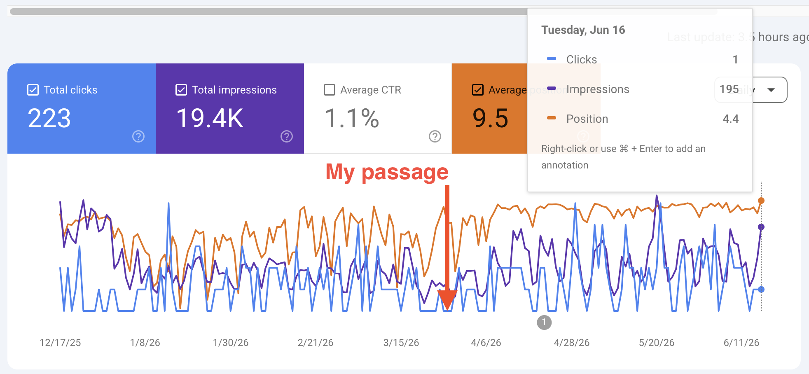
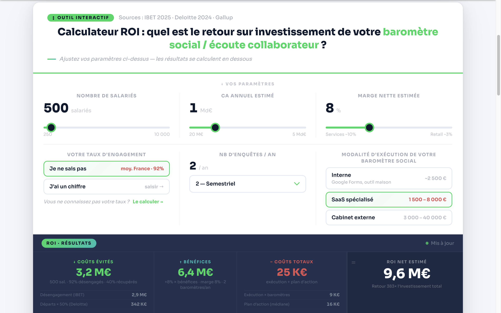

Growth & Email Marketing
Owen Mulhern
growth infrastructure
Email programme management, GA4 attribution, content strategy, and deliverability for acquired and scaling media assets.

Growth & Email Marketing
Email programme management, GA4 attribution, content strategy, and deliverability for acquired and scaling media assets.
"Just as comfortable in a strategy conversation as he is deep in a spreadsheet debugging GA4 tracking issues."
— Beatus Hoang · Sr. Growth Manager, Semrush · managed Owen directly
Semrush · 2024–2025
Managed Semrush's two acquired email assets — The Growth Bulletin and The Early Checkout. Audited GA4 data discrepancies to restore purchase-path attribution, restructured the full email programme, cut 50K unengaged contacts to protect deliverability, and ran content experiments that doubled click volume.
The FACTS GEO Framework — Original AIO Framework
An original AI Optimisation framework built from Semrush proprietary research data — not consensus opinion. FACTS gives content teams a measurable structure for AI-generated search, developed when most practitioners were still guessing. Source-first and methodology-transparent.
How to Build a Revenue-Generating Content Strategy
A tactical guide on mapping content directly to enterprise revenue pipelines. Covers funnel architecture, content-to-revenue attribution, and distribution for acquired media assets — written from the perspective of someone who has audited GA4 discrepancies, restructured attribution, and tracked impact on LTV:CAC from first touch to close.
Marketing for Growth: Marketing & Finance
Long-form piece on the relationship between marketing investment and financial performance — the framing that CMOs and PE portfolio teams use to structure budget allocation decisions.
12 Ways to Streamline Your Marketing Efforts with AI
Part of the content experiment programme that doubled click volume. Edited for The Growth Bulletin — practical AI applications for marketing teams, structured to drive direct traffic to Semrush product pages.
The Growth Bulletin — Newsletter Landing Page
Copy, structure, and value proposition for Semrush's acquired growth marketing newsletter. Built to convert growth marketers arriving from paid and organic channels.
Zest · 2024–2026
Zest is a French HR SaaS company. Inherited a pillar article at position 12 with a weak conversion path. Rebuilt the funnel, built original tools independently, and drove 232 demo reservations from content that previously generated nothing.
Diagnosed the conversion gap: the CTA (reserve a demo) was too strong for the reader stage. Rebuilt the funnel from the reader's perspective.
Built a custom HTML survey generator that captures leads at a 27% rate, currently pulling 7% CTR from the pillar article. Extended the cluster with a budget-allocation article featuring an independently-built ROI calculator — a sector first that passed expert scrutiny and averages 6 minutes 9 seconds on page.
View pillar article ↗
Pillar article moved from position 12 to 4, with 7% CTR to the survey generator.
View survey generator ↗
Independently built a calculation formula for the ROI of social climate measurement — a sector first. Average time on page: 6 minutes and 9 seconds.
View ROI calculator ↗"Owen is one of those growth marketers who's just as comfortable in a strategy conversation as he is deep in a spreadsheet debugging GA4 tracking issues. He reported to me while running Semrush's acquired email assets, The Growth Bulletin and The Early Checkout. He didn't just keep the lights on. He completely overhauled our email program… Whether he was tracking down data discrepancies or running content experiments that doubled our click volume, he owned it completely. He never made excuses and was fully transparent when things didn't work. He's calm under pressure, manages contractors and budgets well, and treats whatever channel he's running like it's his own business. I highly recommend Owen for any growth role."

Sr. Growth Manager, Semrush · managed Owen directly · Feb 2026
Earth.org · 2020–2022
Led the data team at Earth.org, producing original research and data visualisations cited by US law reviews, peer-reviewed journals, and government agencies. The same analytical rigour applied to the Semrush and Zest work above.
Original research · 2025
Original projection estimating 250 years of viable aquifer extraction, built on USGS and GRACE satellite data. Cited in US law reviews.
Python · QGIS · Illustrator
Dataviz series · 2021
Six major coastal cities modelled under projected 2100 sea level rise scenarios using IPCC projection datasets and city-level elevation data.
Python · QGIS · Illustrator
Data journalism · 2021
Wet-bulb temperature modelling across Latin America and the Middle East. Examines the physical limits of human habitability under warming scenarios.
Python · R · Illustrator
Dataviz · 2021
PM2.5 exposure mapped as cigarette equivalents per week by borough — making invisible public health risk legible to a general audience.
Python · QGIS · Illustrator
Dataviz · 2020
91,000 US dams mapped against projected heat extremes under 2°C and 4°C warming using MPI-GE climate simulations.
Python · QGIS · Illustrator
Data journalism · 2021
60 years of German weather data charted across four generations — demonstrating how each cohort normalises a warmer baseline.
Python · Illustrator